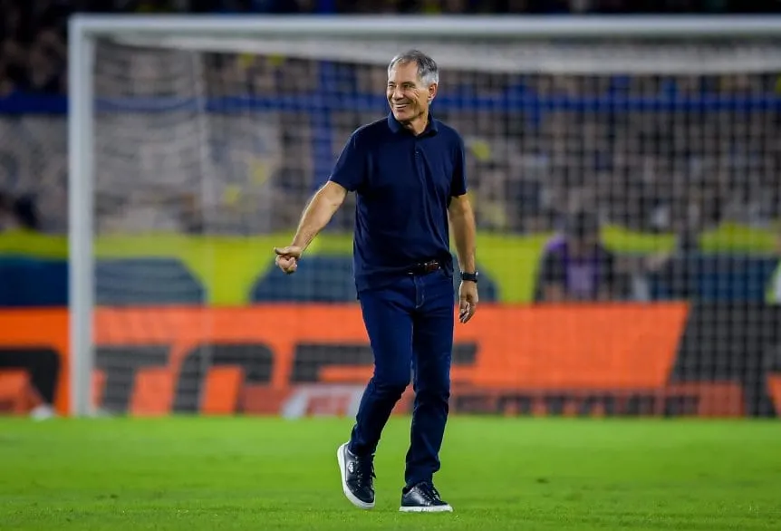

La curiosa frase de Holan tras el triunfo de Central para terminar líder: "Acá hay un virus o una bacteria..."
El DT del Canalla fue consultado por la ilusión de los hinchas de pelear por el título, luego de la victoria ante Independiente. "Es imposible no contagiarse de ese entusiasmo, de ese esfuerzo", expresó.
04/05/2025 08:56 am
Ariel Holan, director técnico de Rosario Central, lanzó una curiosa frase para referirse al contagio y entusiasmo de los hinchas, luego del triunfo por 1-0 ante Independiente para finalizar como líder de la Zona B del Torneo Apertura. "Con relación al pueblo Canalla... ¿Qué te puedo decir? Le dije a los muchachos... Acá hay un virus o una bacteria, que se mete y es imposible no contagiarse de ese entusiasmo, de ese esfuerzo. Eso también baja a la cancha", expresó el DT en conferencia de prensa.
"Esa humildad y esa actitud guerrera que tiene la gente es imposible que no se contagie al cuerpo técnico o los jugadores. Es fuerte. Genera compromiso, te compromete mucho. Vos ves la ilusión que tienen, el esfuerzo que hacen", añadió. En ese sentido, Holan destacó la fidelidad de los hinchas con el equipo a lo largo del año: "La situación está difícil y venir a la cancha no es fácil, y la revientan. Eso emociona a cualquiera. La experiencia acá es muy fuerte y queda grabada para siempre. Es lo que puedo decir".
Holan, cauteloso a pesar de que Central terminó primero
Ariel Holan dejó en claro que no se relaja para los playoffs a pesar de la espectacular campaña de Rosario Central, que finalizó como líder de la Zona B con 35 puntos y también está puntero en la Tabla Anual, que cuenta para las Copas internacionales de 2026.
Ahora empieza un torneo distinto, donde no hay mañana y los antecedentes no cuentan.“Sí pesan en cuanto a la profundidad del análisis de juego, ya que nos hicieron pocos goles y tenemos una interesante cantidad de goles a favor. Ahora vamos a tratar de pasar la mayor cantidad de fases que se puedan con la tranquilidad que tenemos un equipo guerrero y somos un equipo muy complejo para enfrentar. A partir de ahora todo se empareja, pero tenemos un bagaje que nos permite ilusionarnos”, afirmó el DT en conferencia de prensa.
El Canalla, líder de la Zona B, ya tiene rival confirmado para los octavos de final: enfrentará a Estudiantes, que se clasificó de milagro como octavo en la Zona A a pesar de la durísima derrota por 4-0 con Argentinos en La Paternal el viernes.
¿Fanático del Canalla? Enterate todas las noticias de Rosario Central a través de TyC Sports. Seguí nuestra página en Facebook: Rosario Central en TyC Sports. También podés registrarte gratis e indicar tus preferencias para recibir notificaciones en tu browser o bajate nuestra APP (disponible en Android & iOS). Accedé a todas las estadísticas de La liga profesional del fútbol Argentino.